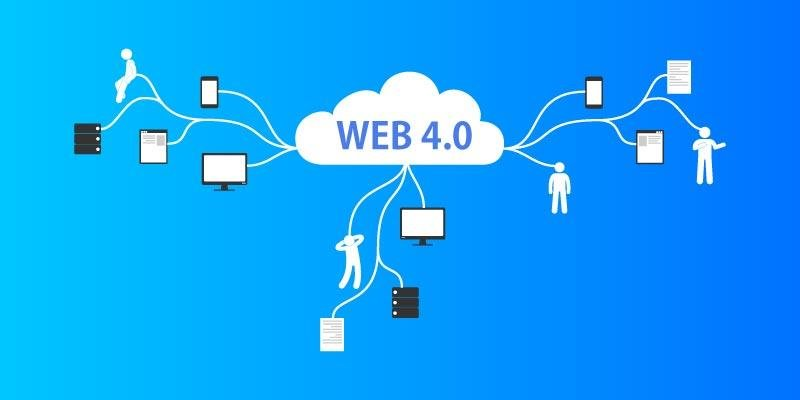

|
Tipo de web |
Ventaja |
Desventajas |
|
|
Web 1.0 |
El primer contacto con el internet |
Dificil de Manejar |
 |
|
Web 2.0 |
Actualizadas/Mayor Seguridad |
Informacion privada a Terceros |
 |
|
Web 3.0 |
Mejor organizacion y garantizando la busqueda por significados |
Codificacion semantica compleja |
 |
|
Web 4.0 |
Acceso a todo tipo de datos, tramites y mayor interaccion |
Expuestos a virus, no necesita internet |
 |